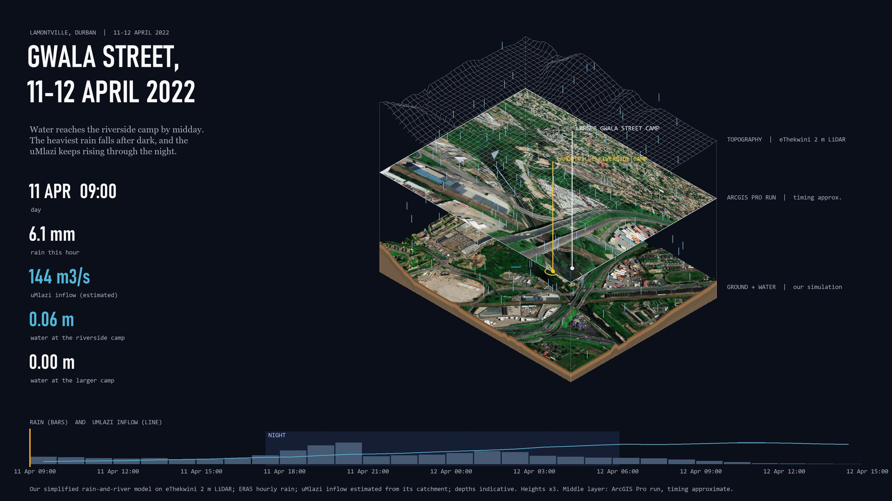

Layers, bottom to top: our simulation of the 2022 storm on eThekwini LiDAR with satellite imagery; your ArcGIS Pro run (timing approximate); the LiDAR topography as a wireframe. Shaded band on the slider: night, 17:30 to 06:15. Depths indicative.